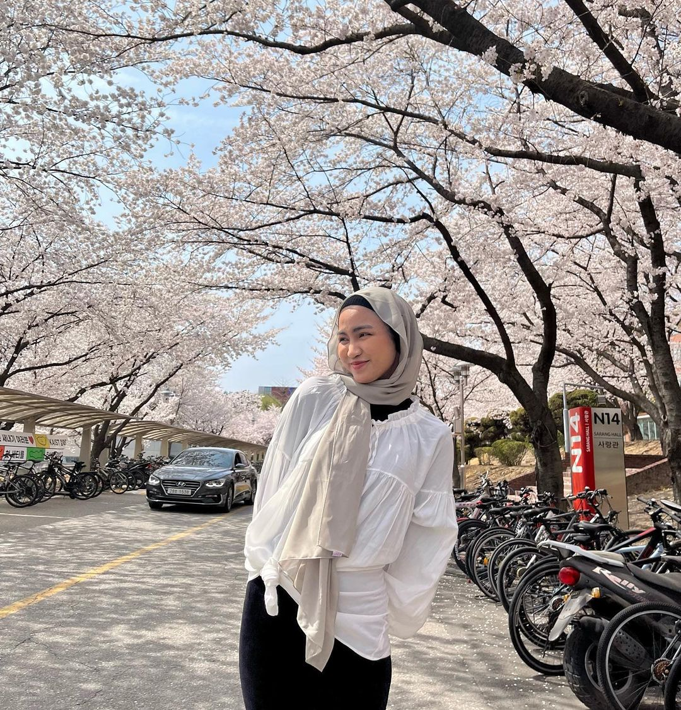
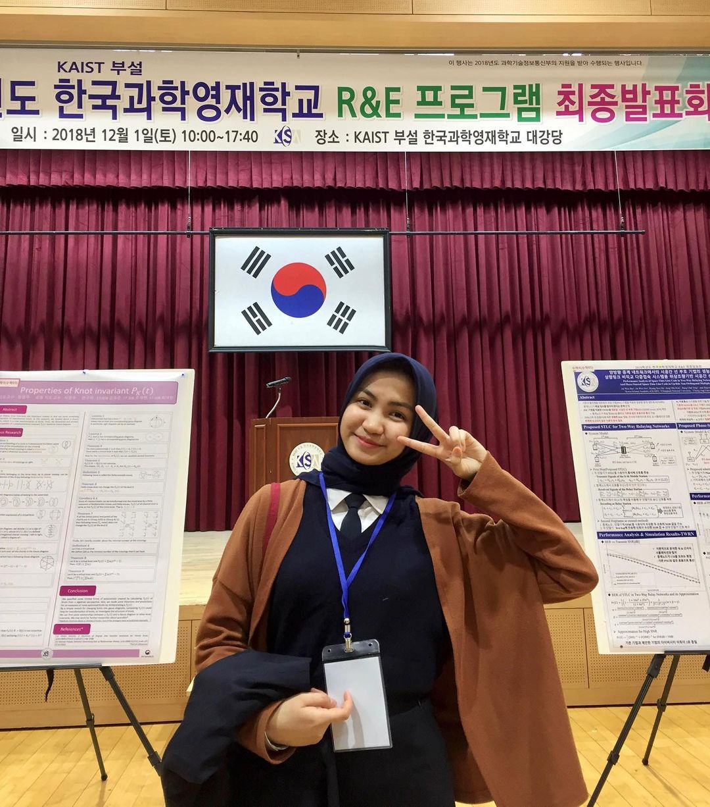
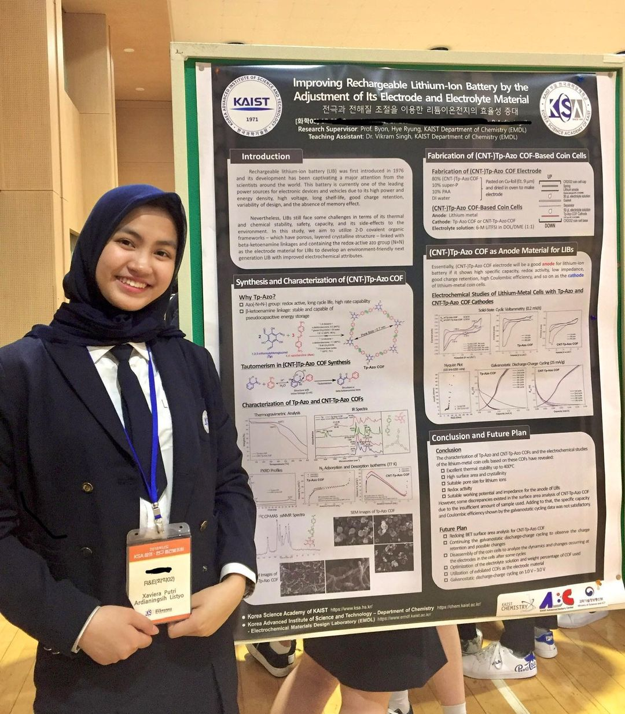
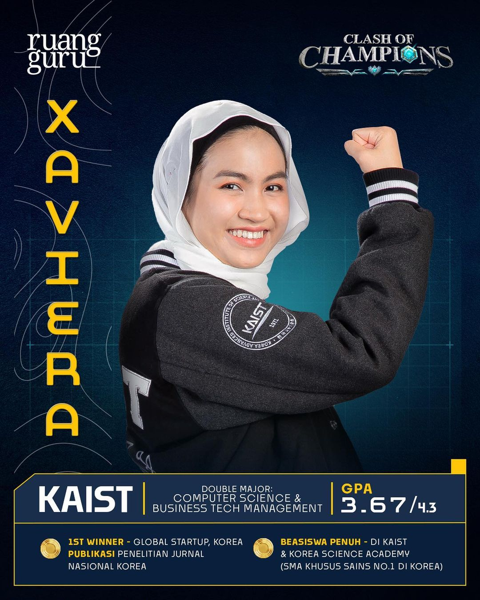

A Quick Peek into Xaviera's Background

She steals the spotlight with being the only woman from the International University Representation in the Variety Show named Clash of Champions (COC) which is hosted by Ruangguru. She's Xaviera Putri, a 23 year old student who is currently studying in KAIST (Korea Advanced Institute of Science and Technology), majoring in Computer Science and Business Technology Management (Double Major). With over 3 Million Followers in Instagram, she receives a lot of love and supports from her fans. She also delivers positive vibes, which attracts more people to like her appearance. Want to know more about her? Let's read more about her journey.
Background
Childhood

Xaviera Putri was born in Jakarta, Indonesia on 25th of August 2001 and she is the third child in the family. Xaviera liked math and competed in various Math and Science Olympics since she was little. She also searched more about scholarships, because she thought it can lighten her parent's burden. She also was surprised that she found out a High School Scholarship, because usually scholarships are for University Students. With all the support and preparation, she succesfully became one of the KSA of KAIST Scholarship Awardee, a fully funded scholarship from Korea Science Academy in 2017. She also became a brave and confident person thanks to all of the support that her family gave.
Education

After being the Scholarship Awardee in Korea Science Academy of KAIST, she continues to succesfully achieve many academic achievements due to her excellent grades. She received Academic Honor for three years, and actively become KSA Student Ambassador. She faces many challenges, like the study environment in Korea that is super competitive, people's stereotype about Xaviera's Hijab, and much more. Despite all the challenges she had, she quickly adapts to the surrounding. Her work even receives the Best Graduation Research Paper on Glucose Transporters in Neural Stem Cells.
Fully adapted to the environment, Xaviera quickly managed to continue to receive a Bachelor's Degree Scholarship as one of the KAIST Scholarship Awardee in 2020. She even took a double degree, which majors in Computer Science and Business Technology Management. It's a challenge that she tooks and a proof that she's commited to develop her skills in the professional environment. In her LinkedIn, she even participated into an Exchange Student Program at TUM Informatics. In the end, she succesfully managed to get a satisfying 3.67 GPA.
Experiences

Xaviera saw this experience as an opportunity to try new things. During her study abroad, she's involved as many roles, some of them are :
- KAIST Indonesia's President
- Fundraiser at ACT Foundation
- Core Staff of Territory 2 of PERPIKA
- KAIST Herald Social Media Manager
- Ruangguru's Invited Speaker
She also received achievements such as :
- 1st Place of International Debate: PIONEERS 2071
- 1st Place Winner of DCAMP Global Startup Match
- 1st Place Winner of SAP University Alliance Challenge
Although the achievements above, there are still a lot more that are not mentioned. Such as Ruangguru's Top 12 Clash of Champions which make her more famous, especially since she shows an outstanding memory in one of the episode. She already has work experience when she became an intern in some of Korea's Industry such as Piloto and Institute for Basic Science. She's also an author of Kimchi Confessions
which shows her story studying abroad.
Social Media
Some already know her way before she's invited to participate in Clash of Champions. But with the exposure from the show, many people know her and started to follow her. Her social media rapidly grows, Both Instagram and Youtube. There, she inspired and motivated her followers with her outstanding personality and active involved in some events. She also shared her study tips to her followers.